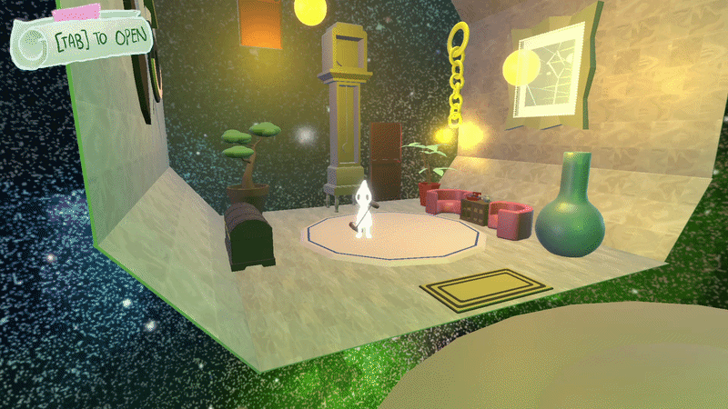
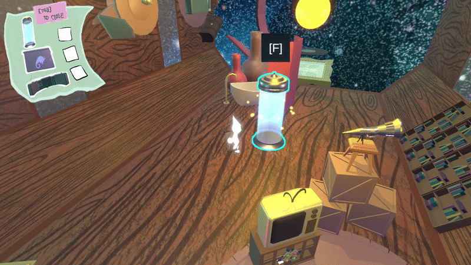

Thomas Ybarra
Game & Level Designer
A 3D puzzle-platformer developed as part of the UT Austin 3D Games Capstone, combining gravity-shifting movement with atmospheric storytelling and surreal environments.
Programmer, VFX and UI Designer, and 3D Artist
2026
Unity, C#, Autodesk Maya, UI/UX design
Protostar is a 3D puzzle-platformer developed as part of the UT Austin 3D Games Capstone. Players take on the role of a young star-like being exploring a home left behind by a mysterious mentor.
The game centers on a gravity-shifting mechanic. Players can walk on walls, flip gravity, and navigate surreal environments while collecting objects to complete an unfinished world.
With a focus on creative movement and atmospheric storytelling, Protostar blends cozy, whimsical visuals with mind-bending platforming mechanics.
The game is currently in early development.

Gravity is the central movement mechanic in Protostar. Instead of navigating environments from a single fixed perspective, players can change the direction of gravity and use walls, ceilings, and unusual surfaces as paths through the world.
This mechanic creates puzzles that combine spatial awareness, exploration, and experimentation.


Move
Look around
Jump
Interact
Pause menu
Game & Level Designer
Programmer · 3D Technical Artist · Build Master
Programmer
Programmer · VFX & UI Designer · 3D Artist
3D Artist · Animator · Concept Artist
Narrative Designer · 3D Artist · Concept Artist
Scrum Master · Sound Designer · Composer